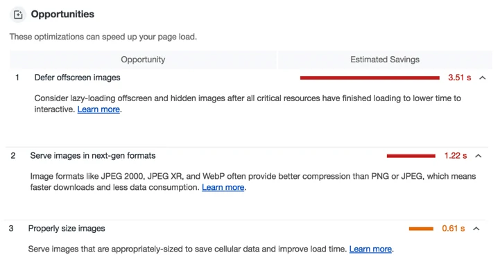
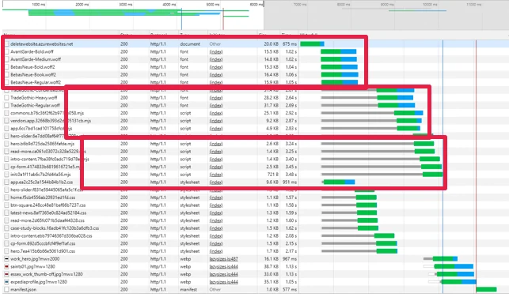
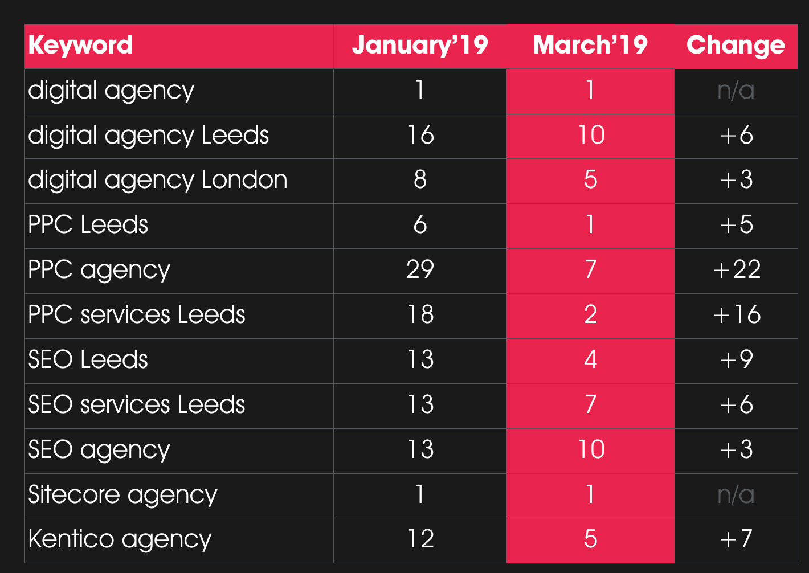

Delete’s Digital Marketing Director, Polly Pospelova, recently spoke about Subdomains vs. Subfolders and ccTLDs vs. TLDs for SEO at Women in Tech SEO event at Zoopla HQ. If you missed it, here’s a detailed recap of what Polly had to say.
How to get a 100 % Lighthouse performance score
Delete’s Head of Search, Polly Pospelova, recently spoke on this topic at International Search Summit, BrightonSEO and SearchLeeds. If you missed this or you simply want to know more about this subject, here’s a summary of what Polly had to say.
I was very proud to take the stage and speak at International Search Summit, BrightonSEO and SearchLeeds, especially because I got the chance to talk about a subject I find so interesting.
That being said, I also appreciate that Lighthouse is still quite new for a lot of people both in and out of the industry, so that’s why I’ve put this blog based on my presentation together to tell you more about it, how it works and the approaches you can take to help achieve a 100% performance score with your website.
Equally, this blog will also be a useful recap for any of you who happened to see my talk and may now be looking into using Lighthouse yourself.
What is Lighthouse?
Google’s official description is that it is an open-source, automated tool for improving the quality of web pages’. You can also run Lighthouse against any page that’s public or which requires authentication.
In terms of its specific functionality, Lighthouse allows you to audit a page’s:
- Performance
- Accessibility
- Progressive web apps
- Best practices
- SEO and more
After Lighthouse has run these audits against your chosen page it will then generate a report for you.
The official Google description also states that Lighthouse can be run in Chrome DevTools, from a Chrome extension, from the PageSpeed Insights website, the command line, or as a Node module.
The following images show Lighthouse being run within these:
Lighthouse in Chrome DevTools

Lighthouse from a Chrome extension

Lighthouse from the PageSpeed Insights website

Lighthouse from the command line, or as a Node module

How can a Lighthouse report help you?
The report Lighthouse creates will provide you with recommendations and opportunities for optimisation and will give you examples of areas where you could look to save time.
For instance, in the example report below, you can see that one ‘opportunity’ recommendation to ‘defer offscreen images’ could save the sample page 3.48 seconds:

In addition to this example, each audit has a reference document explaining the findings, as well as guidance on what you can do to fix the issues it highlights.
To summarise, Lighthouse helps us by effectively monitoring website quality and makes it clear what needs to be fixed.
How do global brands score in Lighthouse?
You might be thinking that it’s surely only the smaller sites that can really benefit from Lighthouse’s audits and that leading, major brands with big and powerful sites would all score well - the reality is quite different and there are many major companies with low scoring sites.
Here’s an example of this, ASOS - a UK retail brand with a £2.5 billion annual revenue - *currently scores just 19/100 for performance.
 *Correct as of 31/03/2019
*Correct as of 31/03/2019
The above is just one example of many big names who don’t perform well. Looking further afield, there are companies from within the SEO industry and even providers of specialist SEO/SEM tools who currently score low in Lighthouse.

While this might be surprising news to you, there are a number of factors that are contributing to this being the case for many sites - one of the main examples being that Lighthouse algorithm changes regularly which can have notable knock-on effects on sites that were previously scoring highly.
Delete’s website as an example
18 months ago on the main stage at BrightonSEO I talked about how you can achieve rankings by using ‘Usage Metrics’. The example I used for this was Delete’s website which we then optimised and got up to a perfect score of 100/100.

However, skip forward to the present and Delete’s website was shown to score only 56/100 in Lighthouse.

This drop was also despite the regular hard work of the Delete Dev Team who follow a long list of best practices to ensure our site is kept up to scratch. A screenshot from our knowledge base below shows exactly how much we already do:

But, based on this change in score for the Delete site, it was clear that even this list of best practices isn’t enough to score top marks.
Improving the score
Not to be outdone by this, our frontend and backend developers gathered together and analysed the Lighthouse reports, and from this they devised a list of changes they could make to build a new version of the site and improve Delete’s score one again to get it back to 100%.
Their top level notes consisted of the following that they would look to action and improve :
- HTTP/2
- Image quality (WebP and others)
- Modern JS and rejection of heavy libraries
- Auto-critical
- Small chunks “load-only-what-you-need”
- Semi-automatic chunk loader
- Modern JS and rejection of heavy libraries
I will now take you through each of these, expanding on what approaches they decided to take based on the findings from the Lighthouse reports.
Migrating from HTTP/1 to HTTP/2
They first decided to migrate from HTTP/1 to HTTP/2. If you’re new to this, HTTP stands for HyperText Transfer Protocol and is used for communication between client computers and web servers by the sending and receiving of HTTP requests and HTTP responses.

HTTP/2 was originally developed by Google and was designed to decrease latency to improve page load speed in web browsers.
However, one of the main limitations of HTTP/2 is that for every request, a browser establishes a connection (plus encryption and handshakes if HTTPS / secure), no matter how small each resource is (image, script, css, video, etc.).The process often takes longer than the transfer of data itself.
Browsers can send 6 requests at a time. Some website owners (including us in the past) create CDNs (content delivery networks) to help overcome this limitation.
You should bear in mind though that enabling HTTP/2 alone doesn’t improve performance. Instead, it enables you to implement certain improvements which would not be as effective with HTTP/1.
With HTTP/2, a browser establishes a connection with a server once and sends all requests within the same connection. As such there are huge savings in time, that were previously wasted.

Think of it as a race, where 100 competitors want to take part, what you’d have with HTTP/1’s race is that only six athletes are allowed to run at a time. Whereas in HTTP/2’s race all 100 can race at the same time. It’s fairly clear which race would finish first.
Improving image quality
We realised that there were lots of things you can do to deliver huge time savings by improving the onsite image quality.
#1 Deferring offscreen images
Most websites have the same universal HTML markup, and the visibility of images is managed with CSS and JS, we figured deferring offscreen images could boost the performance of the site, so we decided to experiment with this.

The desktop view of the website is on the left and you can see that all four interior images are shown.
The tablet view of the website is in the middle and only one interior image shows, but all four images are loaded by the browser.
The size of these offscreen images is huge and we worked out 2.61 seconds can be saved by deferring them. See the results below:

#2 Serving up images in next-gen formats
We recognised that new image formats such as WebP can provide better compression than a PNG or JPEG. This in turn meant faster downloads and less data consumption and therefore a faster site.

#3 Using properly sized images
For this improvement our team deployed an approach called ‘adaptive image size’.
On the old Delete website we only had one image in the HTML markup. This image was resized by the browser depending on the screen settings in place, but the same size image was loaded regardless, ultimately impacting on speed.

To remedy this, on the new site we replaced single images with ‘src sets’. These give a browser a choice of different size images to use.
If this is something you want to try, you can either guess the sizes for your src set or work them out from in Google Analytics by using: Audience > Technology > Browsers & OS > Screen Resolution.

At this point you might be thinking that this would be quite a time-consuming manual task - and you’d be right. However, our frontend and backend developers managed to come up with an automated solution during their hackathon.
They managed to get the adaptive images markup to generate automatically. They simply specified an image placeholder in the markup and replaced it with the correct src set.
We replace this:
 with this:
with this:

While this does expand the DOM significantly, it does allow us to defer all unwanted images and only load properly sized images.
#4 Using lazy load
We worked out that another way to make improvements was to only load images when they get into the user’s viewport and not before. This can be done with complex scripts and HTML markup and by monitoring the scroll or resize events to subsequently only load images when they are needed.
The screenshot below shows how the browser loads only the single image and then as the page scrolls, more images load.

Using a critical approach to JS and CSS
We know that a browser doesn’t start rendering a page until it loads and parses all the resources. More precisely, it loads the HTML, parses it, finds the external resources (JS, CSS), queues them, downloads them, parses and evaluates them and only then renders the page.
What we realised is that this presents a problem for websites with large single JS and CSS files - basically, the process of parsing and evaluation takes a long time. It also means that the user has to wait until this process finishes before meaningful content starts loading. These issues were something we needed to rectify with our site.
For example, none of these frames contain meaningful content:

So here is what fixed and what we now do differently:
The first load
We checked if the browser requested a page for the first time. If this was the case, we would then take only the necessary resources (JS, CSS) for a page, and inline them into the HTML markup, in the HEAD tag. Then when the browser receives the HTML it gets all the necessary resources and parses them in a single process. This enables the browser to show page content to users almost instantly.

After the inline markup loaded on the first page, we then loaded all standard necessary resources in the background and cached them.

Subsequent loads
We then checked if the browser already had the resources cached before skipping the inlining.

So instead of using inlined critical resources, the page use cached resources instead.

As a result, the content loaded instantly on the first and all subsequent loads.
This meant that all the meaningful text displayed from the second frame, allowing users to read the content almost instantly.

Automated solution
We also created anonymous cookies as markers for the resource that was already loaded. So when a page loaded, we checked if the browser already had our resources cookies in order to determine if we needed to send inline resources, or to take them from the cache. This was a brilliantly simple solution which enabled us to load the Delete website almost instantly on first and repeat loads, even on slow 3G connections.
Going with ‘small chunks’ or a ‘load only what you need’ approach.
Instead of having one large CSS or JS file we decided to break up all CSS and JS into smaller chunks - or smaller files - for each logical block on the website. This included aspects like forms, headers, footers, etc.
This was rather than using the old CSS, which was a huge single file which slowed the initial load.
The screenshot below shows an inspection of the red button on our homepage in Chrome DevTools. You can see that the button uses its own the small CSS files: buttons.css, typography.css and colours.css.

This approach was also complemented by HTTP/2, because we loaded lots of tiny resources in one connection quickly and without latency.
Going back to my analogy with the race, not only had we allowed all 100 of our athletes to run at the same time, we’d also made their track shorter.

Using a ‘semi-automatic chunk loader’
Again it would be quite laborious to do this manually, so our developers came up with a solution to semi-automate this process and make their lives easier.
They realised that the frontend developers only needed to declare the names of the resources they need for each component, inside of the components markup:

Then, when a page loads, all components used on the page are then combined and automatically transformed on the server into the right format for the final layout:

Making use of modern JS and rejecting heavy libraries
Another thing our team did was utilise modern JS, which is a new format supported by all modern browsers. A modern JS file size is 20% lighter because it doesn’t contain any legacy code needed for compatibility with old browsers.
We simply switched to modern JS with an automatic fallback to old JS for older browsers and the results speak for themselves.
On the old Delete website you can see that evaluation of JS files takes as long as 133 milliseconds.

Whereas with modern JS it takes only 41 milliseconds.

This difference of almost one second of time saved for just the evaluation of JS is significant, especially on mobile devices.
Final results
What I’m pleased to say is these approaches helped us reach our goal and the Delete site once again has a 100% Lighthouse score.
A key thing to note with all this though is that we focused purely on specific technical aspects, which we developed in order to make the new Delete website better, faster, more adaptive.
What’s more, the new site looks exactly the same - in other words, we didn’t need to focus on UX or Design.

Key performance stats from our new website
To give you a clearer view on some of the improvements here are some performance figures for the old and the new sites.

These numbers show that we managed to get our page to fully load in just 2 seconds which is a third of the original time. But more importantly, those using our site can access content in less than one second, which is almost instant even on a slow 3G connection.
Test it yourself!
If you’d like to see the difference for yourself, then feel free to run Lighthouse on both versions of the Delete website using these urls.
- Old website: old.deleteagency.com
- New website: www.deleteagency.com
Additional useful advice
On top of creating a useful Lighthouse optimisation strategy, with this experiment I solidified my belief in something I’ve been feeling confident about for a while, which is that it’s time for SEOs and Developers to unite!
I can honestly say that without the support and help of our Dev Team I wouldn’t have been able to achieve a 100% score on the new Delete site. Their help and support was invaluable and fed in smoothly with my SEO consultation work.

Lighthouse optimisation is not a one-off task
We’ve also realised that on-going Lighthouse optimisation is the new norm.It is time to stop thinking that once a website is optimised it will remain optimised for good - this is something we learned the hard way. Simply put, you need to regularly check and review performance.
Page speed is a ranking factor for mobile and desktop
After replacing the old website with the new optimised version we saw a significant improvement in rankings for most of our core keywords. In some cases, our rankings have moved up by more than two SERPs.
You can see the difference below:
Find out more
Hopefully you’ve found this review of my presentation to be useful and you can see the steps we took to get our score back to where it was. If you’d like to download the slides from my actual presentation, you can find them here in PDF format.
Also, if you’d like to know more about Lighthouse or need some further advice or support then you can get in touch with our team via email: hello@deleteagency.com

In this post, our SEO Executive, Patrick Crier, evaluates strategies that are already working that will likely become more important in 2020 or considerations agencies have always needed to be aware of that are only likely to become more relevant over the next 12 months.